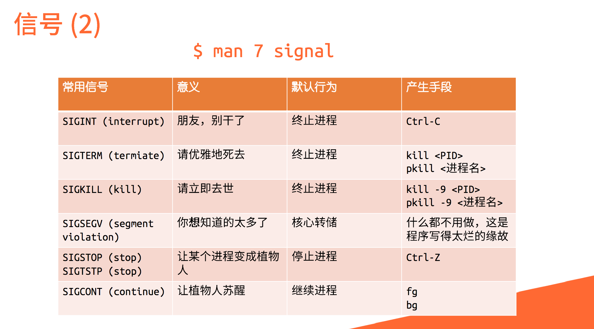
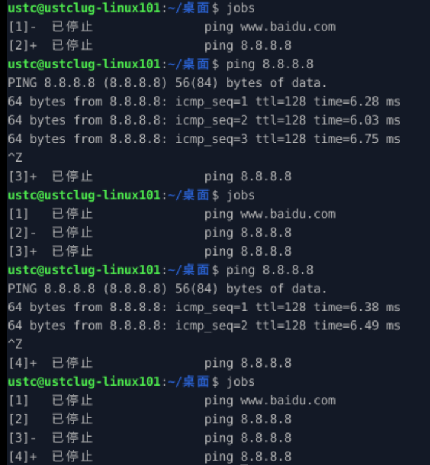

主要通过Linux101来学习Linux的基础知识，以及一些常用的命令。感谢这篇文档的编辑者的辛勤付出。
本笔记结构计划仿照Linux101的组织结构，从零到附录每一章节的学习记录一章节的笔记。另外，也在文章开头设置负一章节，用于发表我对于记笔记这件事情的看法。
负一：记笔记
为什么要记笔记？（待整理修改）
更新：我之前有一个毛病就是看一篇文档看到底部，有时候就会思考自己看了什么，然后就又向上翻自己记住了什么。或者是长时间看一系列的文档，经常会在开始新的一段看文档的过程中翻看上一段时间看过的部分。这样有时候其实是效率低下的无意义乱翻。然而通过记笔记，我可以将自己认为重要的地方加以总结，同时我也能够知道我看到了学到了什么，而不会陷入迷茫的无意义“复习”中。
我不知道。因为我看大家很多人在记，所以我也就记。
可能有一点原因吧。之前我学习一门新的计算机技术的方式就是对着课本（如C语言、数据结构）、文档（如Web开发）或者视频硬看，很多情况会连续的看上好几个小时，顶多有时候哦把教程中的演示代码或者命令照抄一遍。但是几次经历下来，我发现这样的学习效果非常的差，学的极其的慢而且学完之后很快就忘记了。
啊那难道记笔记就学习效果好了吗？我也不知道。不过在学习的过程中，实时的把知识点通过某种方式复述一遍，至少一定比干瞪眼看要好一些。
我会怎样去记笔记？（待整理修改）
更新：总结记录章节重要内容，选择性回答思考题，选择性阅读拓展阅读。
更新：如果是非Linux101内容，我会用引用块来标出。
更新：很重要的话且很精炼的，我会原文复制
暂时不清楚。
零：欢迎
命令开头的 $ 代表此命令使用普通用户权限运行；命令开头的 # 代表执行命令需要使用 root 权限（最高权限），一般等价于 $ sudo 该命令。命令行末尾的 # 代表此符号与其后的内容都是注释，不参与执行。（这一约定仅部分直接复制的代码满足，其他我自行输入的代码块可能不满足这个约定）
命令行中的参数、占位符通常使用尖括号包裹。
一：初识Linux
计算机与操作系统
计算机操作系统成为了联络一般用户和计算机底层设备的中介，让用户无需关心绝大多数的底层设备，大大降低了用户的使用学习成本。
现代操作系统的功能：进程管理、内存管理、文件系统、网络通信、安全机制、用户界面、驱动程序等。
什么是Linux？
1969 年，美国 AT&T 公司的贝尔实验室开发了 UNIX 操作系统。1983 年 9 月 27 日，理查德·斯托曼（Richard Stallman）在麻省理工学院发起了 GNU 计划。在这个计划中诞生了之后十分有名的“GNU 通用公共许可证”（英文简称 GPL）。
1991年，林纳斯·托瓦兹在大学期间编写并发布了自己的操作系统，也就是后来所谓的 “Linux 内核”，成为了如今各类 Linux 发行版的基础。
Linux 内核并不是一个完整的操作系统，为了能让这个内核拥有更多功能、完善的用户界面和更佳的使用体验，许多自由软件社区的开发人员和一些计算机商业公司便开始把各种组件添加到这个内核之上，这才构建成了一个完整的 Linux 操作系统。由于Linux是开源的，所以通过这种方式组合出来的 Linux 操作系统会有许许多多的形式。为了指代某一个基于 Linux 内核构造出来的操作系统，我们通常都将其称之为“Linux 发行版”。
GNU自由软件举例：gcc、gdb、gzip、GNOME、gimp等。当然g开头的不一定是GNU的，不是g开头的也有可能是GNU的。
Linux发行版：
- Debian分支：Debian、Ubuntu
- Red Hat分支：Red Hat、Fedora、CentOS
- Arch Linux 分支：Arch Linux、Manjaro
我们身边的 Linux
Android是Linux的一个著名发行版。Android 属于 Android/Linux 分支。由谷歌公司推出的 Android 叫做 Android 原生系统，而基于该原生系统诞生出来的各类独特的操作系统就是 Android/Linux 系下的子发行版。Android/Linux 下的子发行版很多，如华为公司的 EMUI 操作系统和小米公司的 MIUI 操作系统等。
绝大部分的服务器维护人员都愿意选择一些 Linux 发行版作为它们的操作系统。
Android/Linux 分支下的各类发行版正是主流的嵌入式操作系统。
让自己的计算机用上 Linux
若已经安装了上述虚拟机管理软件，则可以直接双击打开虚拟机镜像（即下载的.ova文件），管理软件会打开并导入该镜像，导入完毕后可直接点击开始按钮启动。
如果读者采用了上面列出的虚拟机之一，其默认登录用户名和密码均为ustc，输入密码即可登录虚拟机系统桌面。
思考题
暂无内容。
拓展阅读
暂无内容。
二：个性化配置与建站体验
使用VMware Workstation的，可以看到Linux101提供的镜像包含了VMware Tools，可以实现文件拖放、剪贴板共享、自适应分辨率等功能。
桌面环境
Linux 本身并不包括图形界面。几个流行的桌面环境：KDE Plasma、GNOME、Xface。无论是哪一款桌面系统，个性化的方式都大同小异。
如果进入桌面之后发现图标、文字过小或过大（不过按理说VMware Tools给自适应过了，但是我的第一次打开时就是图标文字都很小），可以通过以下命令查看和调节分辨率。（也可查阅：屏幕缩放）
- 查看分辨率
可以看到当前分辨率和显示设备名称（即Virtual1），如下所示：
2
3
4
5
6
Virtual1 connected primary 1024x768+0+0 (normal left inverted right x axis y axis) 0mm x 0mm
1024x768 60.00*+ 60.00
3840x2400 59.97
3840x2160 59.97
（下略）
- 调节分辨率
将
1024x768替换为你想要的分辨率即可。
支持的分辨率可以在xrandr的输出中找到（即下面的从第四行开始的数字，其中的分隔符号为字母x）。注意：如果你的显示器不支持该分辨率，会出现黑屏，此时需要等待一段时间，系统会自动恢复到上一个分辨率。
如果你的显示器支持自适应分辨率，可以尝试使用xrandr --output Virtual1 --auto命令。
3. 添加自定义分辨率
可以自行查阅，这里不再赘述。
其余部分我认为暂时不需要记录，主要为个性化配置，需要时查阅即可。
命令行操作
为什么要用命令行
使用命令行操作可以减少鼠标操作，我们经常可以使用一条命令来代替好几次的鼠标单击。但是从长远上看，熟悉了命令行之后再加上有自动补全的 shell 程序，使用命令行可以节省大量时间。
路径的概念：正斜杠反斜杠，绝对路径相对路径。
命令行操作可以整合成.sh为文件名结尾的自动化脚本。
使用命令行看上去很酷
cmatrix：命令行界面模拟《黑客帝国》特效显示。

由于虚拟机中操作不便，这一段是在主机的WSL中录制的。这里前面一段的发狂状态还是我在录屏的时候无意发现的。快捷键 F9 。按 F10 恢复到原速度。
shell
ls: 列出（list）目录的内容cd: 更改目录（change directory）pwd: 查看当前所在的目录（print working directory）
搭建简易的网站
暂无内容
思考题
暂无内容。
拓展阅读
暂无内容。
三：软件安装与文件操作
从这一章开始需要安装一些软件，有些软件对内存和CPU要求较高，在多开软件的情况下可能会导致虚拟机运行卡顿。同时，安装较多的软件，也会需要大量硬盘存储空间。默认情况下设置的虚拟机内存为1GB，CPU核数为1，硬盘分配5GB。可以根据需要适当调整。
点击导航栏虚拟机——设置——处理器，可以调整CPU核数；点击导航栏虚拟机——设置——内存，可以调整内存大小；点击导航栏虚拟机——设置——硬盘（SCSI），可以调整硬盘大小。
注意在扩展虚拟机硬盘空间后，需要进一步的操作。可以参考（待补充）
软件安装
应用商店
自带应用商店的发行版，如 Ubuntu、Manjaro 等，可以直接在应用商店中搜索并安装软件。而没有应用商店的发行版，也可以安装 Snapcraft 或 Flatpak 等在不同发行版上通用的应用商店。
包管理系统/软件包管理器
软件包管理器的一个重要组成部分是软件仓库。
分类：管理 Debian (.deb) 软件包的 dpkg 以及它的前端 apt（用于 Debian 系的发行版）；rpm 包管理器以及它的前端 dnf（用于 Fedora 和新版的 CentOS 和 RHEL）、前端 yum（用于 CentOS 7 和 RHEL 7 等）；pacman 包管理器（用于 Arch Linux 和 Manjaro）等等。
搜索：
1 | apt search <搜索内容> |
安装（一般要加sudo）：
1 | sudo apt install <安装内容> |
使用sudo，如果需要输入密码，在输入密码时，为了安全，终端是不会进行密码的回显的，即终端不会将用户的输入内容打印在屏幕上。因此当你发现自己输入了很多内容也没有什么反应的时候，不用惊慌，只需要像平常一样输入正确的密码、回车，即可完成密码的正确性的鉴定。
官方软件源与第三方软件源
查看本地的软件源列表
1 | cat /etc/apt/sources.list | grep -v "#" |
修改官方源为镜像，加快更新速度
1 | sudo sed -i 's|//.*archive.ubuntu.com|//mirrors.ustc.edu.cn|g' /etc/apt/sources.list |
注意在换源前备份，以便在出错时恢复。
备份方法：（待补充）
更新软件列表与更新软件
在计算机本地，系统会维护一个包列表，在这个列表里面，包含了软件信息以及软件包的依赖关系，在执行 apt install 命令时，会从这个列表中读取出想要安装的软件信息，包括下载地址、软件版本、依赖的包，同时 apt 会对依赖的包递归执行如上操作，直到不再有新的依赖包。如上得到的所有包，将会是在 apt install some-package 时安装的。
更新软件列表：apt update
更新软件：`apt upgrade
手动安装
可以直接下载安装软件供应商打包好的 deb、rpm 等二进制包。deb 格式的软件包对应的是 dpkg 。
请避免直接使用 dpkg -i 安装 deb 包。
如果不小心执行了 dpkg -i 导致系统出现依赖问题，可以尝试通过如下的方式调用 apt 帮助修复依赖管理（ -f 是 --fix-broken 的简写，可相互替换）：
1 | sudo apt -f install |
安装预编译可执行文件
对于用户数量较多的发行版，软件提供商还可能提供预编译好的二进制文件，可以直接运行。
操作文件与目录
cat: 显示文件内容、连接文件内容后显示
less: 显示内容，一次只显示一页，支持滚动、翻页、搜索等功能。常用快捷键
nano: 命令行文本编辑器。在终端最下方是 nano 的快捷键，^ 代表需要按下 Ctrl 键（例如，^X 就是需要同时按下 Ctrl + X）。在编辑完成后，按下 Ctrl + X，确认是否保存后即可。
cp: 拷贝。-r, -R, --recursive 递归复制，常用于复制目录。
inode、硬链接与软链接（符号链接）：参见。
mv: 移动（剪切）。 mv 命令不需要 -r (recursive) 参数。
rm: 删除。
mkdir: 创建目录。可用空格分隔创建的多个目录。可以创建路径。
touch: 当文件不存在时，创建文件。可用空格分隔创建的多个文件。当文件存在时，修改文件的访问时间（access time, atime）和修改时间（modification time, mtime）
stat: 显示文件的属性信息。
find: 搜索文件和目录。支持搜索名称（支持通配符（也叫模式匹配））、类型（文件、目录）、文件大小。支持逻辑运算符。
模式匹配：bash 的匹配模式被称为 glob （此外还有更好的 exglob ，但要先启用），可以使得操作很高效。但是要注意高效也可能会导致误操作时付出巨大代价。
使用 tar 操作存档、压缩文件
主要作用：打包多文件以便分发。
命令选项组合： 与大部分 Linux 命令相同，tar 命令允许将多个单字母（使用单个 - 符号的）选项组合为一个参数，便于用户输入。例如，以下命令是等价的：
1 | tar -c -z -v -f target.tar test/ |
关于后缀名。
使用 tar 创建压缩包需要“两次处理”,先打包再压缩。
软件的使用文档
man 命令名: 获取用户手册。这样得到的文档大而全，很详细，但不利于快速上手。
tldr(Too Long Didn’t Read): 包含一个由社区维护的精简版文档。
tldr 命令名: 获取精简版文档。
拓展阅读
Vim
参见Vim学习笔记。
文件的时间戳
使用 stat 工具可以看到一个文件有四个时间戳，分别为 Access，Modify，Change 和 Birth。
atime 实际用处不大，有许多用户会在挂载磁盘时添加 noatime 参数，让操作系统在访问文件时不去更新 atime，以提高磁盘性能。
mtime 仅会在文件数据变化时更新，而 ctime 会在文件数据以及文件元信息（例如权限、所有权）变化时更新。
思考题解答
为什么 mv 命令不需要 -r (recursive) 参数
复制文件夹的过程需要创建新的文件和文件夹，而移动文件夹的操作可以看作是「重命名」。
由于目录是一个树状结构，那么移动文件夹只需要修改这个「文件夹节点」本身的位置与名称即可，不需要对文件夹内的文件（它的子树）做递归的操作。而假使在复制的时候只处理单个「文件夹节点」，那么复制得到的新文件夹中存储的文件和原文件夹存储的文件就会指向相同的文件（而不是再复制一份新的）。
四：进程、前后台、服务与例行性任务
进程
常用的进程查看工具：htop、ps。直接调用 ps 仅会显示本终端中运行的相关进程。如果需要显示所有进程，对应的命令为 ps aux。
进程标识符（PID）： 进程的唯一标识。点击 htop 的对应表头可以按进程升序或降序排序。 Shift + k （或大写 K ）可开启/关闭内核进程的显示。
进程优先级与状态
Priority（PRI）和 nice（NI）：用户层主要使用 Nice 值。 Nice 值越高代表一个进程对其它进程越 “nice”（友好），对应的优先级也就更低。Nice 值最高为 19，最低为 -20，通常为 0。
nice 命令在运行程序时指定优先级，而 renice 命令则可以重新指定优先级。
进程状态：运行态（running）、就绪态（ready）、阻塞态（blocked）。调度时操作系统轮流选择可以运行的程序运行，构成就绪态与运行态循环。运行中的程序如果需要其他资源，则进入阻塞态；阻塞态中的程序如果得到了相应的资源，则进入就绪态。
实际 Linux 系统中分类要更复杂一些。
用户进程控制
通过向进程发送信号实现用户进程控制。
可以通过 man 7 signal 查看信号的详细信息。如果显示 在第 7 节中没有关于 signal 的手册页条目。，则可运行以下命令：
1 | sudo apt update && sudo apt install manpages manpages-dev |
再尝试查看。
常见信号：
SIGINT：中断信号，通常由 Ctrl + C 发送。
SIGKILL：终止信号，无法被捕获或忽略，强制终止进程。
SIGTERM：终止信号，可以被捕获或忽略，通常用于优雅地终止进程。
SIGSTOP：停止信号，暂停进程。
SIGTSTP：挂起信号，暂停进程，通常由 Ctrl + Z 发送。
SIGCONT：继续信号，恢复进程。
SIGSEGV：段错误，通常由内存访问越界引起。

默认情况下，在 shell 中运行的命令都在前台运行，如果需要在后台运行程序，需要在最后加上 & 。
使用 Ctrl + Z 发送 SIGTSTP 使进程挂起。
使用 jobs 命令查看当前 shell 中的作业（即shell中的进程）。使用 fg %n 将第 n 个作业放到前台运行，使用 bg %n 将第 n 个作业放到后台运行。
进程编号后的 + 表示当前前台作业，- 表示当前后台作业。

kill 命令
可以在 htop 中直观地发送信号。
可以使用 kill 命令发送信号。默认值为 SIGTERM，可以通过 -s 选项指定信号名称，或直接 -数字 指定信号编号。
1 | kill -s SIGKILL 1234 |
不同的 shell，kill 可能有不同的来源，行为可能有所不同，需要小心使用。
类 kill 命令可用 apropos kill 查找。
脱离终端
终端一旦被关闭会向其中每个进程发送 SIGHUP（Signal hangup），而 SIGHUP 的默认动作即退出程序运行。可在命令前加 nohup 使其不受 SIGHUP 影响。其输出会被重定向到 nohup.out 文件中。
关于 tmux 。
服务
服务进程必须独立于用户的登录，不能随用户的退出而被终止。这类一直默默工作于后台的进程被称为守护进程 (daemon)。
目前绝大多数 Linux 发行版的 init 方案都是 systemd，其管理系统服务的命令是 systemctl。
systemctl status [服务名]: 查看服务状态。(服务名为可选参数，不填写则显示所有服务的状态)。
systmectl list-units: 列出所有服务。
使用 journalctl 查看日志。
自定义服务
服务配置文件通常存放在 /etc/systemd/system/ 目录下，文件名以 .service 结尾。
自定义服务
例行性任务
基于时间的一次或多次周期性定时任务。主要由 at 和 crontab 来实现。
拓展阅读
暂无内容。
思考题解答
SIGKILL（kill -9）可以杀死所有进程吗？
init 不会被 SIGKILL 杀死。
状态为 D （Disk sleep）的进程不会被立刻杀死。状态为 Z （Zombie）的进程事实上已经不再执行了，因此不会再一次被退出，一般来说 init 进程能妥善的移除这类进程。
五：用户与用户组、文件权限、文件系统层次结构
用户与用户组
服务器环境中，用户的概念往往比较明确，目的是通过权限限制，以减小服务被攻击时对系统安全的破坏。对于个人用户来说，主要区分的是使用者的用户与系统用户，并且划分权限，以尽可能保证系统的完整性不会因为用户的误操作或恶意程序而遭到破坏。
查看 /etc/passwd 文件，来得到系统中用户的配置信息。
用户类型分为：root 用户（根用户）、普通用户、系统用户。
谨慎使用根用户（root）权限执行命令！
Fork Bomb：一个简单的 shell 脚本，会不断地创建子进程，直到系统资源耗尽。可以通过限制用户的最大进程数来防范。
1 | :(){ :|:& };: |
系统用户：系统用户是为了运行系统服务而创建的用户，通常不允许登录系统。在 Linux 中，系统用户的 UID 有一个指定范围，而这段范围在各个发行版中可能不同。
普通用户：普通用户可以登录系统，并对自己的家目录下的文件进行操作。普通用户无法直接修改系统配置，也无法为系统环境安装或卸载软件。
切换用户
sudo: 不加入其他参数，sudo 后面直接加命令，将以 root 用户的身份执行该命令。加上 -u 用户名 的参数，可以切换到指定用户的身份执行命令。
小技巧：在终端中输入 sudo !! 可以重复上一条命令，但是以 root 用户的身份执行。在 Shell 中，!! 即代表上一条命令，可以和其他的命令结合使用。
su: 切换用户，也就是说直接切换终端的用户权限，常用于需要执行多条 sudo 命令的时候。su - 用户名 可以切换到指定用户的身份，su 不加参数则默认切换到 root 用户。
但是，Ubuntu 等 Linux 发行版默认禁止了 root 用户的密码登录，只允许通过 sudo 提高权限，也就是说默认情况下，允许你用 root 权限执行命令（而无需切换到该用户的环境），但是不允许直接切换到 root 用户权限下。当然，仍然可以通过 sudo su 来获得一个为 root 用户权限的 shell。
用户组
用户组是用户的集合。通过用户组机制，可以为一批用户设置权限。比如 sudo 就是一个用户组。一个用户可以属于多个用户组。
可以使用 groups 命令，查看自己所属的用户组。
用户组和用户一样，也有编号：GID (Group ID)。
命令行的用户配置操作
passwd 用户名: 修改密码。如果没有输入用户名，则修改自己的密码。
adduser: Debian 及其衍生发行版中附带的一个方便的用户管理脚本，可以用来向系统添加用户、添加组，以及将用户加入组。
文件权限
使用 ls -l 查看当前目录中文件的详细信息。
序号 字段 含义 1 -rw-r--r--文件类型和权限（下方详细解释） 2 1硬链接数（该文件/目录的引用数量） 3 user所有者（Owner） 4 group用户组（Group） 5 1234文件大小（字节） 6 Feb 8 10:30最后修改时间 7 example.txt文件名 第一列的字符串从左到右意义分别是：
- 文件类型（一位）：
d目录，-文件。- 文件所属用户的权限（三位）。
- 文件所属用户组的权限（三位）。
- 其他人的权限（三位）。
对于每个权限，第一位r代表读取 (Read)，第二位w代表写入 (Write)，第三位x代表执行 (Execute)，-代表没有对应的权限。
对于一个文件来说，拥有执行权限，它就可以被操作系统作为程序代码执行。如果某个程序文件没有执行权限，你仍然可以查看这个程序文件本身，修改它的内容，但是无法执行它。
而对于目录来说，拥有执行权限，你就可以访问这个目录下的文件的内容。
为了更好地理解目录权限的含义，可以把目录视为一个「文件」来看待，这个文件包含了目录中下一层的文件列表——「读取」对应读取文件列表的权限，「写入」对应修改文件列表（添加、删除、重命名文件）的权限，「执行」对应实际去访问列表中文件、以及使用 cd 切换当前目录到此目录的权限。
chmod: 修改文件权限。
chown: 修改文件所有者。
文件系统层次结构
在 Windows 中，分区以盘符的形式来标识（如「C 盘」、「D 盘」），各个分区的分界线是很明确的。这种组织形式源于 DOS 和早期的 Windows，并一直传承下来。
UNIX 系列采用了一种不一样的思路组织文件：整个系统的文件都从 /（根目录）开始，像一棵树一样，其他的分区以挂载 (mount) 的形式「挂」在了这棵树上。根目录下的目录，由文件系统层次结构标准 (FHS, Filesystem Hierarchy Standard) 定义其作用，大部分的 Linux 发行版遵循此标准，或由此标准做了细小的调整。可以使用 man hier 和 man file-hierarchy 查看你的系统中关于文件系统层次结构的文档。
拓展阅读
暂无内容。
思考题解答
暂无内容。
六：网络、文本处理工具与 Shell 脚本
I/O 重定向与管道
一般情况下命令从标准输入（stdin）读取输入，并输出到标准输出（stdout），默认情况下两者都是你的终端。
重定向：将命令的输入输出重定向到文件或者其他设备上。常用操作如下，不详细的可以自行查阅资料。
注：以下的任意一个输出相关的符号，当输出文件不存在时都会创建该文件。
操作 语法 描述 标准输出重定向（覆盖） command > file将标准输出写入 file，覆盖原内容标准输出重定向（追加） command >> file将标准输出追加到 file末尾标准错误重定向（覆盖） command 2> file将标准错误写入 file，覆盖原内容标准错误重定向（追加） command 2>> file将标准错误追加到 file末尾标准输出和错误一起重定向（覆盖） command > file 2>&1或command &> file将标准输出和标准错误都写入 file，覆盖原内容标准输出和错误一起重定向（追加） command >> file 2>&1将标准输出和标准错误都追加到 file末尾标准输入重定向 command < file以 file作为命令的输入Here Document command << EOF ... EOF将多行输入提供给命令，直到遇到 EOFHere String command <<< "text"直接提供字符串 text作为标准输入
管道（pipe），操作符 |，作用为将符号左边的命令的 stdout 接到之后的命令的 stdin。管道不会处理 stderr。
网络下载
通过wget (wget) 和 cURL (curl) 工具，我们可以 Linux 上进行轻量的下载活动（相比要专门打开 firefox 浏览器进行下载来说）。
详见网络下载。
文本处理
wc: 统计文件的行数、单词数、字符数，换行符也会被统计。对于中文文本，涉及到分词算法，单词数可能不准确。中文字符统计，需要使用 -m 选项，考虑宽字符。
diff: 比较两个文件的差异。加参数 -w 可忽略所有空白字符， -b 可忽略空白字符的数量变化。
diff -u会输出更加友好的格式。
head: 不加参数的时候默认显示前 10 行。 -n 指定行数， -c 指定字节数。 -数字 指定行数。
tail: 类似 head 。tail 还有一个非常实用的参数 -f：当文件末尾内容增长时，持续输出末尾增加的内容。这个参数常用于动态显示 log 文件的更新。
grep: 非常强大的文本查找工具。结合正则表达式能发挥更大作用。
sed: 能实现基本替换（s/// 命令）。实际上也是非常强大的文本操作工具，不仅支持正则表达式，而且能够做的操作也不止是替换。
Shell 脚本
Bourne Shell (sh): Unix 系统的默认 Shell，简单轻便，脚本编程功能强，但交互性差。
Bourne Again Shell (Bash)，是 GNU 开发的一个 Shell，也是大部分 Linux 系统的默认 Shell。
修改环境文件 .bash_profile、.bashrc、.bash_logout 可实现用户定制环境。
bash 支持使用 alias 别名代替命令关键字（alias name=‘命令’）。输入 alias，可以查看目前存在的别名。除了 bash 以外，其他的 shell 也有 alias 的支持。部分 shell 会自带一些 alias。
可以使用几种方法运行 Bash 脚本：
- 在指定的 Shell 下执行，将脚本程序名作为 Shell 的第一个参数：
1 | bash show.sh [option] |
- 将脚本设置为可执行，然后像外部命令一样执行：
1 | chmod a+x show.sh |
.命令： 在当前 shell 中执行脚本（而不是新建一个 shell ），脚本中的变量定义、函数定义等都会在当前 shell 中生效。在 bash 中，source 命令与 . 命令等价。但是绝大多数时候，如果不清楚 . 或 source 命令的行为，不建议使用这种方式执行脚本。
#!(shebang, 或 shabang): 当一个文本文件首行有 shebang，且以可执行模式执行时，shebang 后的内容会看作这个脚本的解释器和相关参数，系统会执行解释器命令，并将脚本文件的路径作为参数传递给该命令。
同一个行中安排多个命令。
组命令。
Shell 变量
shell 不支持数据类型，它将任何变量值都当作字符串。但从赋值形式上看，可将 shell 变量分成四种形式：用户自定义、环境变量、位置变量和预定义特殊变量。
name=串: 变量定义。其中 = 两边不允许有空格。如果串中含空格，就要用双引号括起。
$name或${name}: 变量引用。花括号是为了帮助解释器识别变量边界，如 ${skill}Script 与 $skillScript。
unset <name>: 删除变量。
bash 中未定义的变量默认值为空值。为了更加严格以便于检测拼写错误，可以在脚本开头加上 set -u 来实现这一点。
每个用户登录系统后，Linux 都会为其建立一个默认的工作环境，由一组环境变量定义，用户可以通过修改这些环境变量，来定制自己工作环境。
在 Bash 中，可用 env 命令列出所有已定义的环境变量。
在当前 shell 中定义环境变量：使用 export 命令来定义环境变量。在同一个 shell 中使用 export 定义之后，这个环境变量会一直保留，直到这个 shell 退出。
对于某条命令临时定义环境变量：在命令前加上环境变量的定义。此时只有这一条命令的环境变量出现变化。
位置变量。
特殊变量。
特殊字符：反斜杠、双引号（弱引用）、单引号（强引用）、反引号。
以上三者详见这里（确实没什么可记的，原文就很凝练）
单引号、双引号均可实现多行输入。
read <name>: 读取用户输入。 -p 可以设置提示信息， -r 可以防止 \ 这样的符号被视为特殊符号。
echo: 输出变量信息。 -n 参数不会在结尾输出换行符，而 -e 参数会解析文本中的转义字符（例如 \n）。
printf "%s" $<name>: 格式化输出，类似C语言中的 printf 。注意在结尾加上 \n 换行符。
算术运算、条件表达式、流程控制、函数、 Bash 脚本测试，详见这里。
拓展阅读
暂无内容。
思考题
暂无内容。
七：Linux 上的编程
C 语言开发
Linux 和 Mac OS X 上常用的编译器是 gcc 和 clang。
Windows 上常见的编译器则是 cl.exe。
Unix 哲学的一部分：Rule of Silence: When a program has nothing surprising to say, it should say nothing.
直接使用 gcc
gcc: 编译 C 语言程序为二进制可执行文件或对象文件（ .o 文件）。-o 指定输出文件名。-c 将源文件编译为与源文件相同文件名的对象文件（不用 -o ）。
对象文件是二进制文件，不过它不可执行，因为其中需要引用外部代码的地方，是用占位数替代的，无法真正调用函数。
C 语言的多文件实现：将一个大型项目拆分为多个源文件（ .c 文件）与头文件（ .h 文件），实现模块化编程，提高可重用性、开发效率和编译效率。
避免头文件重复包含：
2
3
4
5
6
7
8
// 头文件的内容
int add(int a, int b);当utils.h第一次被包含时，UTILS_H尚未定义，因此头文件的内容会被编译，并且UTILS_H被定义。
如果utils.h再次被包含，由于UTILS_H已经定义，编译器会跳过头文件的内容，直接到#endif。
gcc 的编译其实是四个过程的集合，分别是预处理（preprocessing）、编译（compilation）、汇编（assembly）、链接（linking）， 分别由 cpp、cc1、as、ld 这四个程序完成，gcc 是它们的封装。
使用构建工具
使用构建工具能够实现批量编译、按某一顺序编译、仅编译部分文件（如仅编译修改过的文件），能够满足完成一个项目的要求。
Makefile 是中小型项目常用的构建工具。创建一个名为 Makefile 的文件，写入一定的规则，可以实现高效的编译。
一种典型的规则如下：
1 | 目标: 依赖1 依赖2 ... |
在 shell 中执行 make 最终目标 ，即可进行编译。
那么有一个疑问， Makefile 是如何寻找依赖文件进行编译的呢？
Makefile 中的依赖文件搜索顺序：
当Makefile中的命令需要找到依赖文件时，它会按照以下顺序搜索：
- 当前目录：首先在当前目录下搜索。
- VPATH变量：如果当前目录下没有找到，Makefile会查看VPATH变量指定的目录列表。
- vpath指令：Makefile还支持vpath指令来为不同类型的文件指定搜索路径。
VPATH变量
VPATH是一个特殊的变量，用于指定搜索依赖文件的目录。例如：
这条指令告诉Makefile，如果当前目录下找不到依赖文件，就去
src和include目录下搜索。
vpath指令
vpath指令更为灵活，可以为特定类型的文件指定搜索路径。例如：
2
vpath %.h include这条指令告诉Makefile，所有的
.c文件都在src目录下搜索，所有的.h文件都在include目录下搜索。
makefile 中还含有很多隐含规则。
CMake: 过 cmake 命令生成 Makefile，再进一步进行 make。 CMake 已经比较陈旧，现在已经有 Modern CMake 作为改进。
Python 语言开发
Python 解释器大体工作流程：在 Python 解释器中，Python 代码首先被处理成一种字节码（Bytecode，与 JVM 运行的字节码不是一个东西，但有相似之处）， 然后再交由 PVM（Python virtual machine）进行执行，从而实现跨平台和动态等特性。
注意
python3 -v是启用冗余模式（verbose mode），而大写的 V ，即python3 -V才等同于python3 --version。
pip3: install 安装一个 Python 包，以及其所依赖的包。uninstall 卸载一个 Python 包，这不会删除之前一起安装的包的依赖。
Python 依赖管理
requirements.txt
1 | # requirements.txt |
使用 pip3 install -r requirements.txt 安装这些包。
setuptools: setup.py
在 PyPI，即 pip 获取 Python 包的来源中，使用 setuptools 是主流选择。
setup.py文件通常使用setuptools模块来定义项目的元数据和依赖。以下是一个基本的setup.py示例：
2
3
4
5
6
7
8
9
10
11
12
13
14
15
16
17
18
setup(
name='your_project_name',
version='0.1',
packages=find_packages(),
install_requires=[
'package1==1.0.0',
'package2>=2.0.0',
'package3<=3.0.0',
],
# 其他可选参数
author='Your Name',
author_email='your.email@example.com',
description='A brief description of the project',
long_description=open('README.md').read(),
long_description_content_type='text/markdown',
url='https://your.project.url',
)
使用以下命令来安装你的项目及其依赖：
1 | pip3 install . |
其他依赖管理方案： pip-tools 、 pipenv 等
Virtualenv(venv, 虚拟环境)
venv 的主要作用是创建一个独立的Python环境，以隔离不同项目之间的依赖和版本，避免冲突。
例如，项目 A 需要使用 Django 1.11，而项目 B 需要使用 Django 2.0，这时就可以为两个项目分别创建两个独立的虚拟环境，从而避免冲突。如果不使用虚拟环境，那么在全局环境中安装 Django 1.11 后，再安装 Django 2.0 时，会覆盖掉 Django 1.11，导致项目 A 无法正常运行。
通过以下命令创建一个虚拟环境：
1 | python3 -m venv venv |
然后激活虚拟环境：
1 | source venv/bin/activate |
激活后，你会发现终端的提示符前多了一个 (venv)，这表示你已经进入了虚拟环境。在虚拟环境中，你可以使用 pip 安装依赖，这些依赖只会安装在当前虚拟环境中，不会影响全局环境。
拓展阅读
Python 环境的另一种管理方式：Conda
Conda 是一个开源的包管理系统和环境管理系统，用于安装多个版本的软件包及其依赖关系，并在它们之间轻松切换。Conda 是 Anaconda 的一部分，是一个开源的包、环境管理系统和软件分发系统。
Miniconda 是 Anaconda 的免费迷你版本，只包含了 Conda、Python 及其依赖，以及少量其他有用的包，例如 pip 和 zlib。而 Anaconda 则额外包含了 250 多个自动安装的科学软件包，例如 SciPy 和 NumPy，并且测试了这些软件包之间的兼容性。
**conda 作为包管理器：**install 安装包，remove 删除包，update 更新包，search 搜索包，list 列出已安装的包，info 查看包的详细信息。
conda 作为环境管理器
1 | conda create -n myenv python=3.6 # 创建一个名为 myenv 的环境，指定 Python 版本为 3.6 |
environment.yml
以下是一个简单的 environment.yml 文件示例：
1 | name: myenv # 环境的名称 |
获取当前环境所对应的 environment.yml 文件： conda env export > environment.yml。
创建一个新环境： conda env create -f environment.yml。
思考题解答
试试 Rust：
八：Docker
参见Docker学习笔记。
九：Shell 高级文本处理与正则表达式
其他 shell 文本处理工具
sort
sort 命令用于对文本文件进行排序，默认按照字典序排序。sort 命令的常用选项：
-r降序（从大到小）排序-u去除重复行-o [file]指定输出文件-n用于数值排序，否则“15”会排在“2”前
sort 的结果会受到本地化配置的影响，可以通过LC_ALL=C sort来忽略本地化配置。
-o 参数存在的必要性：sort file1 > file1会导致文件被清空。对于将排序后的内容写入原文件的情况，可以使用sort file1 -o file1来实现。
uniq
uniq 命令用于去除重复行，但是要求输入是排序好的（因为 uniq 只会去除相邻的重复行）。
uniq 命令的常用选项：
-c显示重复行的次数-d只显示重复行
或者与 sort 命令结合使用：sort file1 | uniq。
正则表达式
参见正则表达式 (Regex) 学习笔记
（我觉得正则表达式是否也需要单独开一个 post 来记笔记，并系统性学习呢？后面再说吧）
正则表达式（Regex）描述了一种字符串匹配的模式，可以用来检查一个串是否含有某种子串、将匹配的子串做替换或者从某个串中取出符合某个条件的子串等。
计算理论中也有一个正则表达式（Regular Expression），是由形式语言理论定义的，它用于描述正则语言（Regular Language），与这里给出的用于字符串匹配的正则表达式不同。
特殊字符。
基本/扩展正则表达式
基本正则表达式（Basic Regular Expressions, BRE）和扩展正则表达式（Extended Regular Expressions, ERE）是两种 POSIX 正则表达式风格。
常用 Shell 文本处理工具（正则）
grep
grep 全称 Global Regular Expression Print，是一个强大的文本搜索工具，可以在一个或多个文件中搜索指定 pattern 并显示相关行。
grep 默认使用 BRE，要使用 ERE 可以使用 grep -E 或 egrep。
命令格式：grep [选项] 模式 文件。如果没有指定文件，grep 默认从 标准输入（stdin）读取数据.
grep 命令的常用选项：
-i忽略大小写-v反向选择，只显示不匹配的行-n显示行号
示例用法：
1 | grep -i "hello" file1 |
sed
sed 全称 Stream EDitor，即流编辑器，可以方便地对文件的内容进行逐行处理。
sed 默认使用 BRE，要使用 ERE 可以 sed -E。
awk
awk 是一种编程语言，用于处理文本文件。awk 以行为单位处理文件，每行被处理为一系列的字段。
awk 使用 ERE。
拓展阅读
暂无内容。
思考题解答
暂无内容。
附录
man 文档的一些示例
暂无内容。
其他的 Linux 发行版：技术差异简介
暂无内容。
感想与吐槽
2025年2月7日11:37:57
太痛苦了太痛苦了，可能是之前在安装 VMware Workstation 的时候使用了破解版，或者是曾经的一些基本配置上出现了失误，导致我的虚拟机一直连不上网。一开始我还以为是Linux版本的问题，换了好多个不同来源的不同发行版都没用，捣鼓了一个晚上一个上午，直到大约一个小时前看到这篇文章中说明的第一种情况，也就是我看到我的网络连接里没有VMnet1这个网络连接，以及文章中说明的如果缺少某一个网络连接则需要重装VMware，我才意识到可能是VMware Workstation的问题。然后我就去重新安装了一遍VMware Workstation（记得一定要把原来的配置清除！当然许可证也可以清除，反正现在VMware已经可以无需许可证，免费给个人使用了），然后就好了，看起来就是原来的破解版可能有些设置有问题，或者单纯是我自己瞎弄把设置给弄坏了。太痛苦了太痛苦了。